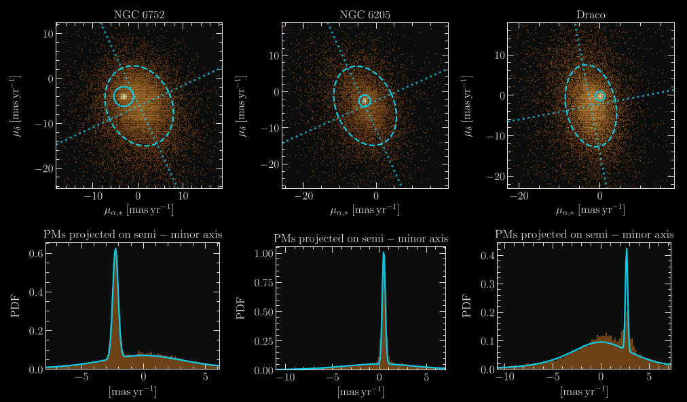

BALROGO: Bayesian Astrometric Likelihood Recovery of Galactic Objects
BALRoGO GitLab repository:
click here
BALRoGO is an open source Python software I created, that performs different
aspects of dynamical modeling of galactic satellites such as globular clusters (GCs)
and dwarf spheroidal galaxies (dSphs). It employs Bayesian fits of bulk proper motions,
surface density, volume density, center, total mass and velocity anisotropy of
both observed and simulated data. In addition, it has straightforward tools
to perform sky coordinate transformations, as well as to define confidence
regions in color-magnitude diagrams.
I warmly invite you to download the code and give it a try, and of course,
message me if you have any questions!
Please cite
us
if you find this code useful in your research:
@ARTICLE{Vitral21,
author = {{Vitral}, Eduardo},
title = "BALRoGO: Bayesian Astrometric Likelihood Recovery of Galactic Objects - Global properties of over one hundred globular clusters with Gaia EDR3",
journal = {\mnras},
year = 2021,
month = jun,
volume = {504},
number = {1},
pages = {1355-1369},
doi = {10.1093/mnras/stab947},
eprint = {2102.04841},
adsurl = {https://ui.adsabs.harvard.edu/abs/2021MNRAS.504.1355V},
}
BALRoGO is available through pip. The quickiest way to install it is
to type the following command in your terminal:
pip install balrogo
If you are using Anaconda, you might want to install it directly in your Anaconda bin path:
cd path/anaconda3/bin/
pip install balrogo
For updated versions of the code, you can do the same as above, but instead of using
pip install balrogo, you should type:
pip install --upgrade balrogo
Proper motion space

Goodness of fit of the proper motion distribution of galactic
satellites (GC or dSph) plus Milky Way interlopers, applied
to Gaia EDR3 data. While the satellite’s proper motions follow a
normal Gaussian, the Milky Way interloper's proper motion PDF is
not Gaussian, and is much better fitted by a Pearson VII distribution.
Image credits: Figure from Vitral (2021).
The study of both GCs and dSphs made a major leap as data
from the Gaia astrometric mission became available, specially with
its second and early third release (hereafter Gaia DR2 and Gaia
EDR3, respectively). This mission provided an overall astrometric
coverage of stellar velocities, positions, and magnitudes of more than
A billion stars in the MW and beyond and therefore allowed many deeper
studies of spherical systems such as GCs and dSphs that can be well
separated from MW field stars (i.e. interlopers) when combining
both position, distance, and most importantly, proper motions.
Although the probability density function (PDF) of proper motions from
Milky Way interlopers has been assumed to follow a Gaussian shape in many
Gaia DR2 related studies, I have helped to show that this
proper motion distribution
has wider wings than a Gaussian, and it is much better modeled by a
Pearson VII asymmetric distribution:
$$\mathrm{PDF_{MW}} =
\displaystyle{ \left[ \frac{\Gamma{\left( - \frac{1}{2} - \frac{\tau}{2} \right)}}{\Gamma{\left(-1 - \frac{\tau}{2}\right)}} \right]^{2} \, \frac{ \left\{ \left[1 + \left(\frac{\mu_{x}}{a_{x}}\right)^{2} \right] \, \left[1 + \left(\frac{\mu_{y}}{a_{y}}\right)^{2} \right] \, \right\}^{(1 + \tau)/2}}{ \pi \, a_{x} \, a_{y}} } \ .$$
Another equivalent form of this function that is better adjusted at large proper motion values (the formula above displays undesirable diamond-like shapes in this regime) can be written as:
$$\mathrm{PDF_{MW}} =
\displaystyle{-\frac{(3 + \tau)}{2} \, \frac{ \left[1 + \left(\frac{\mu_{x}}{a_{x}}\right)^{2} + \left(\frac{\mu_{y}}{a_{y}}\right)^{2} \right]^{(1 + \tau)/2}}{ \pi \, a_{x} \, a_{y}} } \ .$$
I have applied the former formalism to derive bulk proper motions of over
a hundred GCs and nine Local Group dwarf spheroidals. A complete
table with the values of bulk proper motions, centers and other structural
parameters can be accessed here:
The Sérsic model shows a close fit to the surface brightness
(or surface density) profiles of elliptical galaxies and galaxy bulges,
and possibly also those of dwarf spheroidal galaxies and globular clusters.
The deprojected density and mass profiles are important for many astrophysical
applications, in particular for mass-orbit modeling of these systems.
However, the exact deprojection formula for the Sérsic model
employs special functions that are not available in most computer languages.
I helped to derived a more precise analytical approximation
to the deprojected Sérsic density and mass profiles by fitting two-dimensional
tenth-order polynomials to the residuals of the analytical approximations by
Lima Neto et al. (1999, MNRAS, 309, 481, LGM)
for these profiles:
$$f_{\rm new}(x,n) = f_{\rm LGM}(x,n) \ {\rm dex}\left[\sum_{i=0}^{10}\sum_{j=0}^{10-i} a_{i,j}\log^i x\,\log^j n \right] \ .$$
where f can be both the density or mass profiles (with respective
different values for ai,j). As it can be seen in the figure below,
our approximation is the best one for low Sérsic index (i.e., n < 3.4).
Accuracy of different approximations (LGM: Lima Neto et al. 1999; SP: Simonneau & Prada 1999,
2004; EV: Emsellem & van de Ven 2008) and our new one
(Vitral & Mamon 2020)
as a function of Sérsic index. We note that the EV model performs better at specific
values of n that are often missed in our logarithmic grid of 1000 values of n.
The ai,j coefficients from Vitral & Mamon 2020,
which were calculated for the intervals of n ∈ [0.5;10]
and r/Re ∈ [10-3;103]
can be accessed below:
In Vitral & Mamon 2021, I have recalculated these coefficients for other regions of the
n x Re domain, such that one can use different deprojections at each respective region
where a deprojection is more performant. This hybrid approach is the most precise
analytical deprojection of the Sérsic profile (supposing spherical symmetry), at
least to the date when it was first used (i.e., 2021). It employs the deprojections
from
Lima Neto et al. (1999),
Simonneau & Prada (2004),
and the new coefficients (see further below)
derived with the method from Vitral & Mamon 2020.
Characteristics of approximations to the mass and density profiles of the deprojected
Sérsic model. Left two panels: most precise approximation. SP stands for
Simonneau & Prada (2004), LGM stands for Lima Neto et al. (1999) and VM stands for the
new Vitral & Mamon 2021 coefficients applied to the Vitral & Mamon (2020) method. The white curves
indicate a thin region preferred by the LGM approximation. Right two panels:
accuracy of deprojected mass (left) and density (right) of the hybrid model using VM
coefficients, LGM99 and SP04, with respect to the numerical integration done with Mathematica.
This is the analog of Fig. 3 of VM20: the color scale is linear for log ratios between −0.001 and
0.001 and logarithmic beyond. Both sets of figures employ a [100 × 150] grid of
[log n × log(r/Re)], which is shown in all four panels. The gray region in the upper
left of each of the density panels is for regions where the numerical integration of
Mathematica reached the underflow limit because of the very rapid decline of density
at large radii for low n.
As it can be seen in the figure above, this more precise deprojection
follows the following hybrid recipe:
For the mass profile we used
- n x r/Re ∈ [0.5;1.5] x [1;103]: LGM.
- n x r/Re ∈ [0.5;3.4] x [10-4;1): VM, with coefficients from Vitral & Mamon 2021.
- n x r/Re ∈ (3.4;10] x [10-4;1) ⋃ (1.5;10] x [1;10^3]: SP.
For the density profile, the division was even simpler:
- n x r/Re ∈ (3.4;10] x [10-4;10^3]: SP
- n x r/Re ∈ [0.5;3.4] x [10-4;10^3]: VM, with coefficients from Vitral & Mamon 2021.
The ai,j coefficients from Vitral & Mamon 2021,
which were calculated for the intervals of n ∈ [0.5;3.4]
and r/Re ∈ [10-4;103]
can be accessed below: